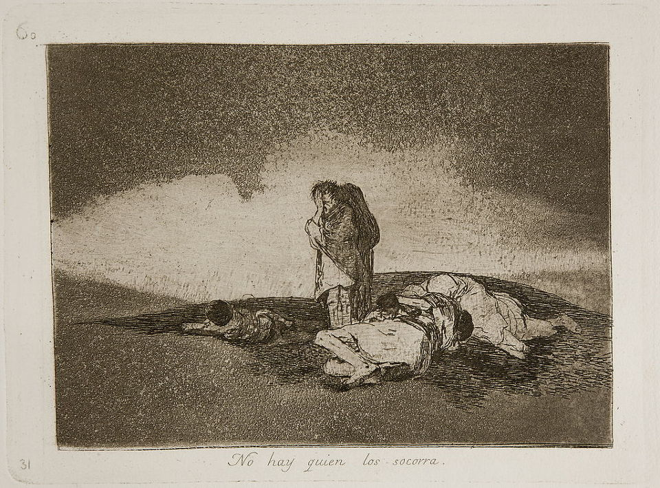
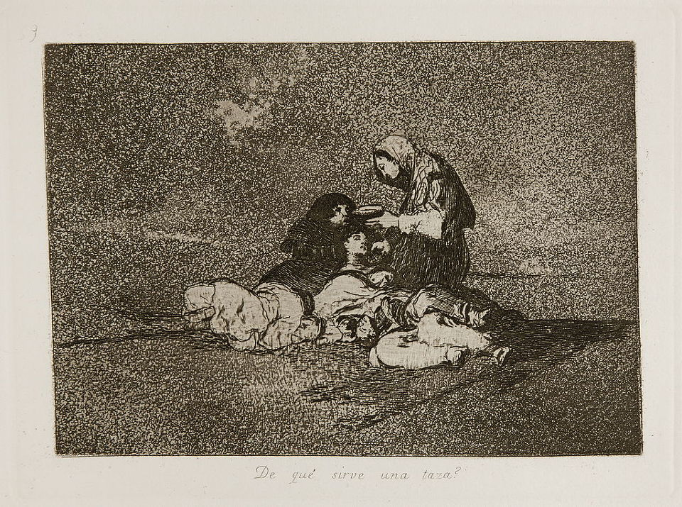
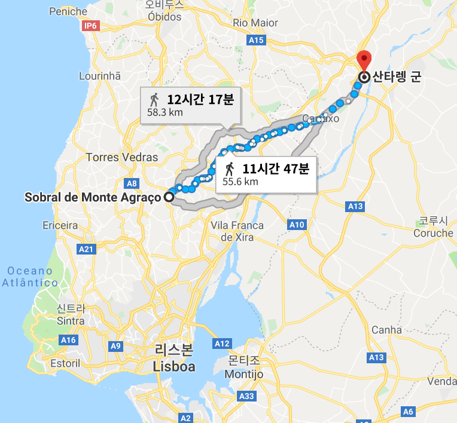
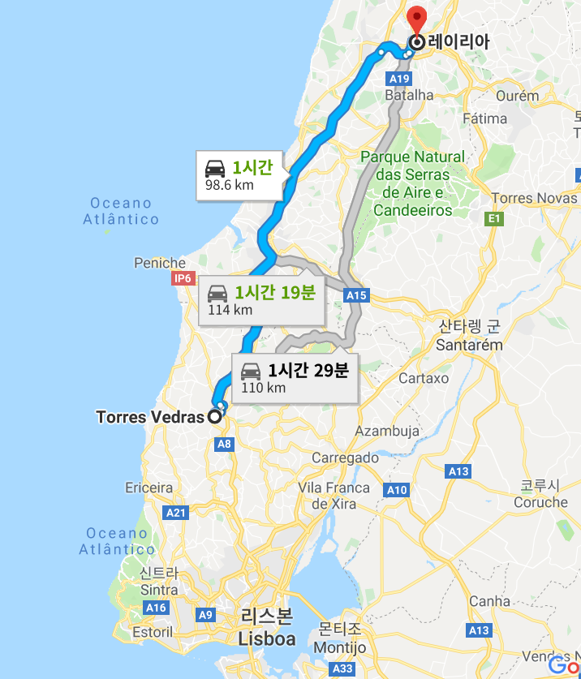

굶주림과 희생 - 토헤스 베드하스 공방전
게시: 2018-12-10T06:30:00+09:00
후퇴하는 웰링턴의 뒤를 쫓아 리스본으로 달리던 마세나가 1810년 10월 14일 생각지도 못했던 토헤스 베드하스 방어선을 직접 육안으로 보고 그 규모에 경악하는 사이, 웰링턴이 사전에 프랑스군 후방에 미리 풀어놓았던 비밀 병기는 이미 작동을 시작한 상태였습니다. 바로 기아였습니다. 애초에 웰링턴은 마세나와 피투성이가 되어 멱살을 쥐고 구를 생각은 전혀 없었습니다. 그의 기본 전략은 리스본 북쪽의 황량한 험지에서 마세나의 진격을 틀어막고 마세나에게 굶어죽든지 돌아가든지 둘 중 하나를 택하라고 강요할 생각이었습니다. 이를 위해서 웰링턴은 부사쿠 전투를 전후하여 계속 그 일대의 포르투갈 주민들을 방어선 이남으로 피난가라고 강요했던 것입니다.
이는 병력은 부족하지만 물자는 풍부하고 기동력은 느리지만 방어에는 탁월한 영국군에게 딱 어울리는 매우 효율적인 전략이라고 할 수 있었습니다. 그러나 그건 웰링턴의 자화자찬에 불과했습니다. 포르투갈 입장에서 보면 이런 작전은 웰링턴이 영국군의 전투 손실을 막기 위해 포르투갈 민간인들을 희생시키자는 수작이었기 때문이었습니다. 포르투갈은 10월 중순부터 우기가 시작되는데, 식량이나 주택이나 영국군은 아무 것도 책임져주지 않으면서 무조건 집을 떠나 남쪽으로 가라는 것은 사실상 길바닥에서 굶어죽거나 얼어죽으라는 이야기나 다름없었습니다. 실제로 많은 주민들은 피난 가기를 거부했고 영국군은 집에 남은 주민들에게 '떠나지 않을 경우 무력을 행사하겠다' 라고 엄포를 놓았습니다.
전쟁은 비참한 것입니다. 영국군의 명령에 순종하여 정처없이 길을 떠난 주민들도, 명령을 거부하고 집에 남은 주민들도 모두 전쟁의 참혹함에 희생되어야 했습니다. 프랑스군에게도 인정은 있으리라는 실낱같은 희망을 품고 집에 남은 주민들은 그야말로 프랑스군에게 가진 식량과 주택을 모두 빼앗기고 여성들은 성폭행까지 당해야 했습니다. 그에 저항하던 주민들은 가차없이 살해되었습니다. 가령 쿠임브라(Coimbra) 시의 주민들 중 끝내 피난가지 않고 남은 주민들 약 2만명 중 5% 정도인 1천명 정도가 쿠임브라가 함락될 때의 무질서한 약탈 와중에 살해되었습니다. 그렇다고 영국군의 총칼에 떠밀려 길바닥에 나선 주민들의 처지가 좋았던 것도 아니었습니다. 그들을 기다리는 것은 동맹군이라지만 난폭하기로는 프랑스군 못지 않았던 영국군의 약탈과 폭행, 굶주림과 추위였습니다.
토헤스 베드하스 방어선 뒤로 후퇴할 때 연합군과 함께 집을 버리고 피난가도록 강요된 포르투갈 주민들의 비참함에 대해서는 로열 스코틀랜드 제1 연대 3대대의 존 더글라스(John Douglas)라는 부사관이 회고록에 다음과 같이 기록하고 있습니다.
"이 불쌍한 주민들은 가족마다 앞에 어린 것들을 앞세우고 걸었는데, 이 어린 것들은 매일, 아니 거의 매시간 줄어들었다. 그러나 난파선의 선원들이 물 위에 뜬 마지막 나무조각에 매달리듯 이들은 계속 어디론가 걸어가야 했다. 이들을 돌봐주는 사람은 아무도 없었지만, 적이나 아군이나 모두 이들의 소지품을 약탈했다. 결국 이들 대부분은 영국군 포병 진지 뒤편에서 땡전 한푼 없이 참혹한 겨울을 보내야 했다. 이 글을 읽는 영국인들이여, 생각해보라. 내가 여러분에게 이런 사실을 전하는 것은 쉬운 일이고, 또 여러분이 이 글을 읽고 잠시 동안이라도 그 불쌍한 사람들에게 동정심을 느끼는 것도 쉬운 일이리라. 그러나 전쟁의 참혹한 손아귀로부터 이 축복받은 섬 주민들(영국인들을 지칭: 영국)을 지켜주신 주님께 얼마나 감사해야 하는지 실감하지 못할 것이다."

(Los desastres de la guerra, 즉 '전쟁의 참상'이라는 고야(Goya)의 시리즈 판화물 중 'No hay quien los socorra' (그들을 도울 자는 없다)라는 그림입니다. 세 명의 여인이 죽어 쓰러져 있고, 한 명이 서서 울고 있습니다.)

(역시 '전쟁의 참상' 시리즈 중 'De qué sirve una taza?' (컵이 무슨 소용이란 말인가?) 라는 그림입니다. 두 명의 굶주린 여인이 쓰러져 있는데 다른 여자 하나가 그 중 죽어가는 한 명에게 뭔가가 담긴 컵을 권하고 있습니다.)
결국 1810년 10월부터 1811년 봄까지 프랑스군과 영국군이 토헤스 베드하스 방어선을 사이에 두고 대치하는 동안 무려 5만명의 포르투갈 주민들이 아사 및 병사, 동사해야 했습니다. 5만이라는 숫자는 당시 포르투갈 전체 인구의 2%로서 정말 막대한 피해였습니다. 한국 전쟁 당시 남한 인구가 약 2천만명이었는데 그 끔찍했던 3년 전쟁 동안 남한 민간인 사망자만 약 38만명으로 약 2% 정도였습니다. 그런데 당시 포르투갈은 약 5개월 동안 전체 인구의 2%가 사망했으니 얼마나 참혹한 광경이었는지 상상이 가실 것입니다.
포르투갈 민간인들에게 이토록 참담한 희생을 강요한 결과 프랑스군도 큰 피해를 입었을까요 ? 예, 당연히 입었습니다. 그러나 그 숫자는 상대적으로 매우 작았습니다. 1810년 9월 기세 좋게 포르투갈 국경을 넘은 프랑스군은 총 6만5천으로 시작했으나 다음해 2월 결국 프랑스군이 철수할 때 살아서 돌아간 것은 4만이었습니다. 그 중 전투에 의한 사상자는 부사쿠 전투 때의 약 4500 정도에 불과했고 나머지는 모두 굶주림과 그로 인한 합병증에 의해 희생된 것이었습니다. 또 알게 모르게 굶주림에 지쳐 탈영한 프랑스군도 꽤 많았겠지요. 무려 2만이나 되는 적을 총 한방 쏘지 않고 무찔렀으니 웰링턴은 기뻐했을까요 ?
웰링턴은 기뻐하지 않았습니다. 자신이 포르투갈 주민들에게 끼친 피해에 대한 자책감 때문은 아니었습니다. 그는 마세나는 불과 2~3주도 버티지 못하고 스페인으로 철수할 것이라고 확신하고 있었고, 그때 굶주리고 지친 채 후퇴하는 마세나의 군대를 추격하여 격파할 생각이었습니다. 그의 머리 속에는 약 1년 전인 1809년 5월, 포르투(Porto)에서 퇴각하는 술트의 군단을 추격하며 기세를 올렸던 신나던 순간이 그려지고 있었던 것이지요.
그러나 놀랍게도 마세나는 먹을 것이라고는 아무 것도 없던 토헤스 베드하스 방어선 바로 코 앞에서 무려 1달을 버텼습니다. 웰링턴의 예상대로 프랑스군의 굶주림은 극심했습니다. 불과 2주만인 11월 초 이미 식량 부족으로 인한 프랑스군의 비전투 병력 손실은 5천에 달했으니까요. 수백 명의 프랑스군이 굶주림에 견디지 못하고 영국군 측에 투항해왔습니다. 그를 견디지 못하고 마침내 마세나는 병력을 철수시키기 시작했습니다. 그러나 프랑스군은 확실히 노련한 적수였습니다. 짙은 안개가 끼었던 11월 14일 밤, 프랑스군은 군복을 입고 군모까지 쓴 허수아비들을 감시 초소에 남겨둔 뒤 조용히 철수해버렸습니다. 다음날 아침 10시가 넘어 안개가 다 걷히고도 몇 시간이 더 지나서야 영국군은 프랑스군이 모조리 철수했다는 것을 눈치챌 정도의 기민함이었습니다.
포르투에서 술트를 결국 놓쳤듯이 마세나도 놓치게 되었다고 생각한 웰링턴이 느림보 영국군을 닥달하여 부랴부랴 그 뒤를 쫓았으나 영국군 전위부대가 프랑스군을 따라잡은 것은 무려 2일이 지난 11월 17일이 되어서였습니다. 그리고 놀랍게도 프랑스군은 기가 죽어 걸음아 날살려라 도망치고 있는 상태가 아니었습니다. 쫄쫄 굶은 군대치고는 엄청난 속도인 하루 28km의 행군을 2일간 강행한 프랑스군은 어느 틈에 테주(Tejo) 강 북안에 면한 강변 도시 산타렝(Santarém)에 겨울 숙영지를 마련하고 든든한 방어진지까지 구축해놓은 상태였습니다. 마세나는 식량 부족으로 인해 토헤스 베드하스 방어선 앞에서는 오래 버티지 못할 것이라고 보고 식량 사정이 그나마 나았던 이 곳에 진지를 구축한 뒤 포병대와 야전 병원 등 이동에 시간이 오래 걸리는 부대부터 미리 이동시켜 놓았던 것입니다. 산타렝에는 레이니에(Jean Reynier)의 제2 군단이 자리잡았고 나머지 부대들은 역시 먹을 것이 있는 더 북쪽 지역으로 분산되어 있었지만 웰링턴은 감히 프랑스군을 공격하지 못했습니다. 이번엔 닭쫓던 개 신세가 된 영국군을 프랑스군이 든든한 방어진지 안에서 비웃는 상황이 된 셈이지요.

(마세나가 원래 대치하던 곳은 토헤스 베드하스가 아니라 소브랄이라는 마을 근처였습니다. 그곳으로부터 산타렝까지는 대략 55km 정도 걸리는 곳이었습니다. 하루에 28km씩 걸었다는 이야기지요.)
이렇게 양군은 지루한 대치 상황에 들어갔습니다. 웰링턴은 프랑스군이 여기서도 굶주리다 결국 몇 주 버티지 못하고 철수할 것이라고 확신했지만, 놀랍게도 마세나의 프랑스군은 정말 뛰어난 식량 수집 기술을 발휘하여 다음해 3월까지 무려 3개월이 넘는 기간을 버텼습니다.
대체 프랑스군은 어떻게 이렇게 먹을 것도 없이 버틸 수 있었을까요 ? 결국 웰링턴의 초토화 작전은 그다지 완벽하지 않았던 것입니다. 찰스 콕스(Charles Cocks)라는 영국군 정보 장교가 11월 4일 기록한 일지를 보면 다음과 같은 구절이 있습니다.
"만약 우리 병참 장교들을 동원해서 (토헤스 베드하스) 방어선 앞 10 리그(league, 1리그는 약 5.5km)에 걸친 전 지역에서 모든 식량을 다 사들였더라면 적은 식량 부족으로 훨씬 더 심각한 피해를 입었을 것이다. 페니슈(Peniche) 지방의 총독인 블런트(Blunt) 장군이 얼마전 포르투갈 민병대장들(Capitao Mors)에게 레이리아(Leiria)와 방어선 사이에 있는 전체 곡물을 다 치우는데 시간이 얼마나 걸리겠는지 질문한 적이 있었다. 그들의 답변은 6주였으나, 지난 달 우리가 후퇴할 때 실제로 그들에게 통보가 갔을 때는 불과 며칠의 여유 밖에 주어지지 않았다. 많은 양의 식량이 적의 손에 떨어졌을 것이라고 확신한다."

(그러니까 원래 계획은 토헤스 베드하스 북쪽 100km 넘게 떨어진 레이리아까지 초토화 작전을 펼치려는 것이었습니다. 그것이 정말 철저히 수행되었다면 대체 얼마나 많은 주민들이 죽어야 했을까요 ?)
그래도 물론 먹을 것은 부족했습니다. 마세나가 그렇게 먹을 것도 별로 없는 곳에서 버틴 이유는 웰링턴의 인내심이 바닥이 나서 서투른 공격을 해오는 것을 역공하든가, 아니면 스페인에서 드루에(Drouet)의 제9 군단이 지원을 위해 이동해오면 합세하여 웰링턴을 치기 위함이었습니다. 그러나 웰링턴의 조심성은 바닥을 몰랐고, 레이니에의 제2 군단이 완전히 고립된 상태로 굶주리고 있었는데도 공격할 생각을 전혀 하지 않았습니다. 결국 마세나는 다음 해인 1811년 2월, 실패를 인정하고 포르투갈을 떠나 스페인으로 후퇴했습니다. 그 때 즈음에는 먹이찾기의 귀재 프랑스군조차도 더 이상 먹을 것을 찾을 수 없을 정도로 그 일대가 탈탈 털렸기 때문이었습니다. 웰링턴은 '영국군이라면 한달도 버티지 못할 곳에서 프랑스군은 무려 3달을 버텼다'라며 혀를 내둘렀습니다.
결국 1810년~1811년 봄까지 이어진 마세나의 침공과 그에 맞선 웰링턴의 작전은 수만 명의 무고한 민간인 사망자만 낸 채 양측에게 아무 의미도 없이 끝났습니다. 전쟁, 특히 외국군에게 국토를 맡긴 전쟁이란 이렇게 참혹하고 무의미한 것입니다.
Source : http://www.historyofwar.org/articles/campaign_massena_portugal.html
https://www.lifeofwellington.co.uk/commentary/chapter-twenty-three-torres-vedras-october-1810-to-february-1811/
http://www.historyofwar.org/articles/wars_peninsular.html
https://en.wikipedia.org/wiki/Lines_of_Torres_Vedras
http://www.historyofwar.org/articles/lines_of_torres_vedras.html
http://samilitaryhistory.org/vol102sm.html
https://www.voakorea.com/a/article----625----124496254/1348359.html
https://en.wikipedia.org/wiki/The_Disasters_of_War